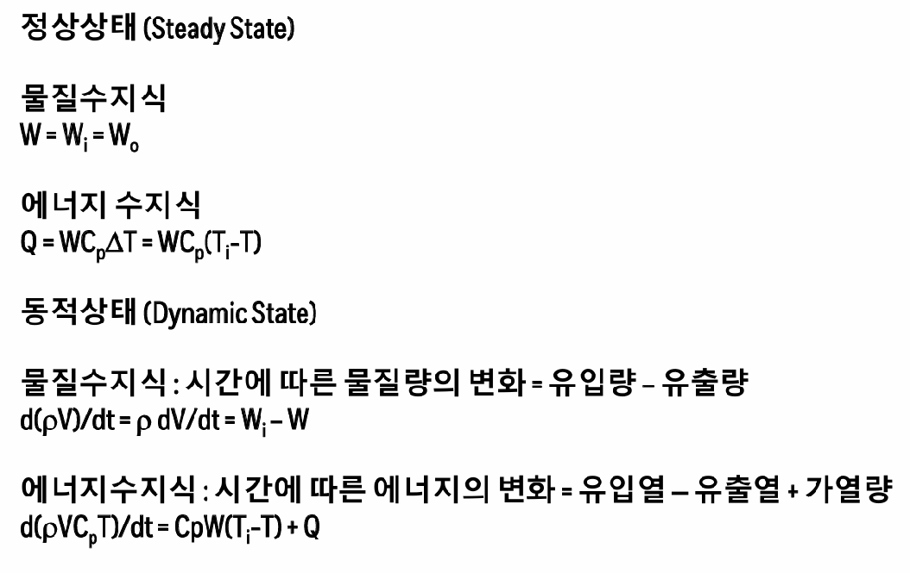
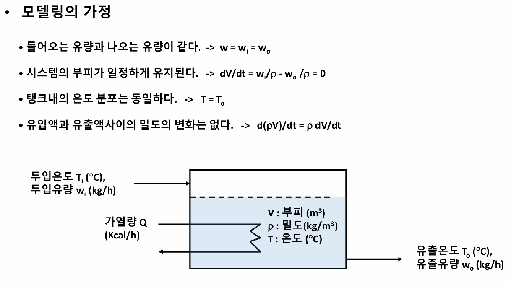
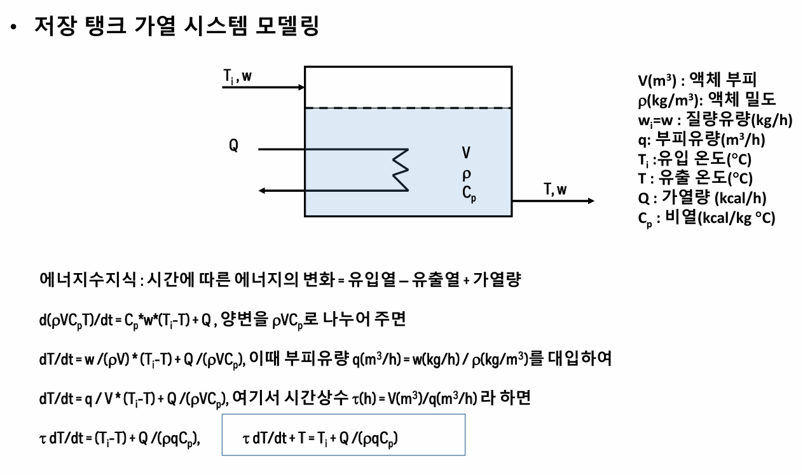
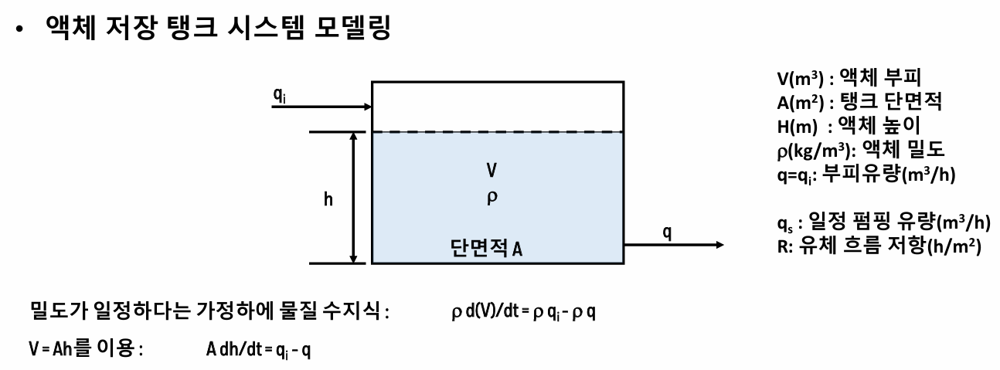
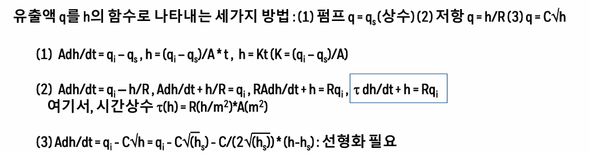
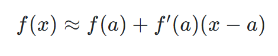
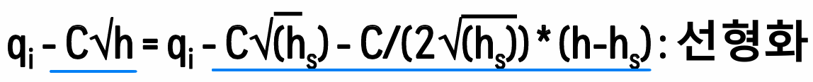
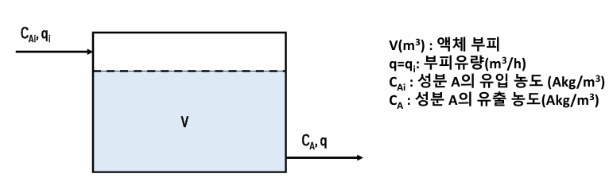
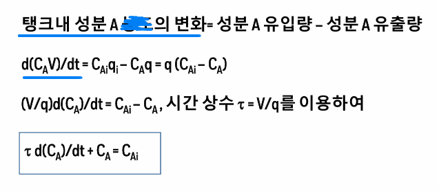
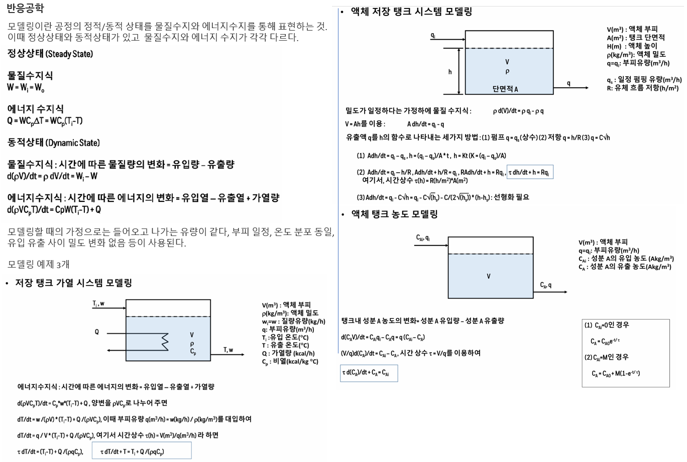

1. 공정의 모델링
모델링이란 공정의 정적/동적 상태를 수식을 통해 표현하는 것이다. 이때 수식은 열역학적 물성치, 모멘텀 수지식, 또는 전달현상 관계식을 기반으로 물질수지와 에너지수지를 수립하여 나타내게 된다. 이때 정상상태와 동적상태가 있을 수 있는데, 이 경우 물질수지와 에너지 수지가 각각 다르다.

이러한 모델링의 가정은 다음과 같다.

모델링은 이론보다 적용이 중요하므로, 이제 저장탱크를 가열하는 시스템을 모델링해보자. 탱크에 열을 가해주는 상황을 모델링하면 다음과 같다.

즉 열을 가해주면 내부에 축적되고, 나오는 유량의 온도변화에도 기여한다.
이제 액체저장탱크에서 유입과 유출이 있을 때, 탱크의 높이와 유량사이의 관계를 모델링해보자.

이제 q를 h의 함수로 나타내야 한다.
이때 문제 조건에 따라 유출액 q는 다음과 같이 나타내진다.
1)펌프를 통해 물이 유입 유출되는 경우, 펌핑유량 qs가 주어진다.
2)만약 흐름에 저항이 있어서, h(높이)에 비례하여 나가는 유량이 달라지는 경우가 있다. 이 경우 저항에 따라 h/R로 유출이 결정된다.
3) 그냥 나간다고 하면 mgh=1/2mv^2 따라서 q=Av=A루트(2gh)에서 q가 h의 루트에 비례할 수 있다.

이때 3번에서 C루트h를 어떻게 풀 것인가? 이는 선형화로 푼다. 루트h를 단순한 1차식으로 근사시킨다. 선형화는 선형근사를 의미한다.

이를 적용하면 다음과 같다.

마지막으로 액체저장탱크에서 유입과 유출이 있을 때, 탱크의 농도변화도 어떻게 되는지 모델링해보자.

탱크에 들어오고 나가는 유량이 똑같을 때, 들어오는 농도CAi와 나가는 농도 CA가 존재한다. 이때 부피는 안변하겠지? 여기서 농도에 대한 수지식을 세우면 다음과 같다.(물질 수지)
탱크내 성분 A의 변화=성분A 유입량 - 성분A 유출량

정리하면 다음과 같다.
